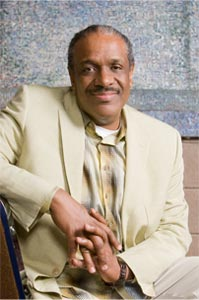
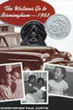
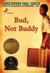
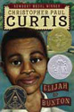

2010 Book Week Author
Christopher Paul Curtis

While he began his working life at the Fisher Body Plant attaching doors to big Buicks for 13 years, Christopher Paul Curtis was writing in his journal even then. He and his factory partner worked out a schedule so that rather than taking turns, they would each hang every car door for a half hour and then have a half hour break, which gave him time to write. Happily for all his readers, his wifeKaysandra encouraged him to take a year off work and just write. The 1996 Newbery Honor and Coretta Scott King Honor Award winning book The Watsons Go to Birmingham - 1963 was the result.The Watsons were originally taking a road trip to Florida, just as Curtis and his family had done, but he decided that didn’t lead to a good story. Having them change destinations made all the dramatic difference needed to create this award-winner.



Five other books have been published and applauded. Bud, Not Buddy won both the Newbery and Coretta Scott King Awards in 2000; Elijah of Buxton won the Newbery Honor Award and the Coretta Scott King and Scott O’Dell Awards in 2008. Books about Mr. Chickee are comical and mysterious adventures, while Bucking the Sarge examines the consequences of greed. The importance of family is explored in all, and many take place in Flint, Michigan, the place where he grew up, though the Curtis family now lives in Windsor, Ontario, across the river from Detroit, Michigan.Whether he’s writing historical fiction dealing with prejudice and hatred or more light hearted fare, Christopher Paul Curtis is a fine storyteller. In an author’s note on the Scholastic website extolling the joys of family and writing, he stated: “I have a riot when I write. I laugh. If I knew it was this much fun, I would have started when I was 4. I love it.” If only he had started sooner, we’d have more of his books to read!